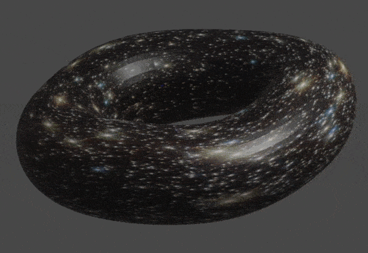

အကယ်လို့ ကျွန်တော်တို့ရဲ့ စကြာဝဠာကြီးကသာ အချို့ သိပ္ပံပညာရှင်တွေ ဟောကိန်းထုတ်ထားသလို ဒိုးနတ်ပုံ အဝိုင်းကြီး ဆိုရင် အာကာသထဲ ခရီးထွက်တဲ့ သူမှန်သမျှ တချိန်တော့ မူလ ထွက်ခဲ့တဲ့ နေရာကို ပြန်ရောက်လာမှာပဲ ဖြစ်ပါတယ်။ နောက်ပြီး စကြာဝဠာကြီးရဲ့ အရွယ်အစားကိုလဲ တိုင်းတာလို့ ရနိုင်လိမ့်မယ်လို့ ယူဆကြပါတယ်။
“အခုတော့ စကြာဝဠာကြီး ဘယ်အရွယ် ရှိလဲ ဆိုတာ တိုင်းလို့ ရပြီလေ” လို့ ပြင်သစ်နိုင်ငံ လီယွန် တက္ကသိုလ်က အာကာသရူပဗေဒ ပညာရှင် သောမတ်စ် ဘူချာတ် (astrophysicist Thomas Buchert, of the University of Lyon, Astrophysical Research Center in France) က ပြောပါတယ်။
စကြာဝဠာကြီး စပြီး ဖြစ်တည်စ အချိန်လောက်က ကျန်ရှိခဲ့တဲ့ အလင်းရောင်တွေကို လေ့လာရင်းနဲ့ ဒီ ဒိုးနတ်ပုံ စကြာဝဠာ သီအိုရီကို အဆိုပြုခဲ့ ကြတာပဲ ဖြစ်ပါတယ်။ ဒီ စကြာဝဠာ မူလအစပိုင်းက အလင်းရောင်ကို လေ့လာတဲ့ ပညာရှင်တွေဟာ စကြာဝဠာရဲ့ အလျား၊ အနံ နဲ့ အမြင့် ဆိုတဲ့ အတိုင်းအတာတွေဟာ သူ့မူလ နေရာကို ပြန်ကွေ့ပြီး ဒိုးနတ် လိမ်သလို လိမ်နေတယ်ဆိုတာ တွေ့ရှိလာ ရတာပဲ ဖြစ်ပါတယ်။
သိပ္ပံပညာရှင်တွေဟာ စကြာဝဠာကြီး အကြောင်း ပြောရင် အမြဲတန်း အိုင်းစတိုင်းရဲ့ နှိုင်းယှဉ်ခြင်း သီအိုရီ (General Theory of Relativity) ကို ရည်ညွှန်းပြီး ပြောကြပါတယ်။ ဒီသီအိုရီက အချိန်နဲ့ အာကာသကြီး ဘယ်လို လိမ်ခေါက်နေလဲ ဆိုတာကို ရှင်းပြထားတာပါ။ (ဒီအကြောင်း နောက်မှ သပ်သပ် အခန်းဆက် ဆောင်းပါးရှည် ရေးပေးပါမယ်)။ ပြီးတော့ စကြာဝဠာထဲက ကြယ်တွေ၊ ဂြိုလ်တွေနဲ့ အခြား အရာဝတ္ထုတွေ အချင်းချင်း ဘယ်လို ဆက်စပ်နေလဲ ဆိုတာကိုလဲ ရှင်းပြပါတယ်။ တနည်းအားဖြင့် စကြာဝဠာကြီး တစ်ခုလုံးကို တွဲထားတဲ့ ဆွဲငင်အား (Gravity) နဲ့ ပါတ်သက်လို့ အသေးစိတ် ရှင်းပြထားတာပါ။
နှစ်ပေါင်းများစွာ ကြာအောင် စကြာဝဠာကြီးရဲ့ ပုံပန်းသဏ္ဍာန် နဲ့ ပါတ်သက်ပြီး အငြင်းပွားနေ ခဲ့ကြပါတယ်။ အချို့က စကြာဝဠာကြီးဟာ လားရာဖက်အားလုံးကို ညီညီညာညာ ပြန့်သွားနေတယ်လို့ ပြောပါတယ်(ရထားသံလမ်းတွေလို ဘယ်ဖက်သွားသွား တဖြောင့်တည်း ရှိနေတယ်လို့ ပြောတာပါ) ။ အချို့ကလဲ ဝေးသွားရင် တဖြည့်ဖြည့် စုသွားတယ်လို့ ပြောပါတယ်။ (ရထားသံလမ်းလို မညီပဲ တဖြည်းဖြည်း သံလမ်းနှစ်ခု သွားဆုံတာမျိုး စုသွားတာကို ပြောတာပါ)။ တချို့ကတော့ တဖြည်းဖြည်း ကားသွားတယ်လို့ ယုံကြည်ကြပါတယ်။
ညီညီညာညာ ပြန့်သွားတဲ့ စကြာဝဠာနဲ့ တဖြည်းဖြည်း ကားသွားတဲ့ စကြာဝဠာတွေဟာ အဆုံးအစ မရှိပဲ ဆက်လက် ပြန့်ကား သွားနိုင်မှာ ဖြစ်ပါတယ်။ ဒါပေမယ့် တဖြည်းဖြည်း စုသွားတဲ့ စကြာဝဠာမျိုးကျတော့ တချိန်မှာ အရာအားလုံး ပြန်စုပြီး ပြီုကွဲ ပျက်စီးသွားမှာ ဖြစ်ပါတယ်။
စကြာဝဠာ ဖြစ်တည်စ အချိန်လောက်က ကျန်ခဲ့တဲ့ အလင်းရောင်တွေကို လေ့လာမှုအရ စကြာဝဠာကြီးဟာ ဘက်ပေါင်းစုံကို ညီညီညာညာ ပြန့်သွားနေတယ်လို့ ပညာရှင်တွေက ယူဆကြပါတယ်။ ဒါကို ပညာရှင်တွေက စကြာဝဠာ အပြားကြီးလို့ (Flat universe) ခေါ်ကြပါတယ်။ ဒါပေမယ့် ဒီလို ညီညီညာညာ ပြန်သွားနေပေမယ့်လဲ စာပွဲ မျက်နှာပြင်လို ရေပြင်ညီ ပြားနေတာ မဟုတ်ပဲ စက္ကူလိပ်ထားသလိုမျိုး သူ့အစနဲ့ သူပြန်ခေါက်နေတာ မျိုးလို့ ပြောကြပါတယ်။
စကြာဝဠာကြီးဟာ စက္ကူကို လိပ်ထားသလိုများတင် မဟုတ်ပါဘူး။ ဒီအလိပ်ရဲ့ အစနဲ့ အဆုံးကလဲ ပြန်ပြီး ဆက်နေပါသေးတယ်။ တနည်းအားဖြင့်တော့ ဒိုးနတ်ပုံ (မုန့်လက်ကောက်ပုံ) ပြန်ပြီး လိပ်နေတာ မျိုးပါ။ ဒီဒိုးနတ်ပေါ်မှာ ဆွဲတဲ့ မျဉ်းပြိုင်တွေဟာ အမြဲတမ်း ပြိုင်နေမှာ ဖြစ်ပါတယ်။

ဒီလို လိမ်ခေါက်နေတဲ့ အရပ်မျက်နှာနဲ့ ပါတ်သက်တဲ့ အကြောင်းအရာတွေ အသေးစိတ် သိရအောင် ပညာရှင်တွေဟာ စကြာဝဠာကြီး ဖြစ်စ အရွယ်အစား သေးငယ်စဉ် ရှိခဲ့တဲ့ အလင်းရောင်လက်ကျန်တွေကို ရှာဖွေလေ့လာခဲ့ ကြတာပါ ဖြစ်ပါတယ်။ အထူးသဖြင့်တော့ စကြာဝဠာ ဖြစ်တည်စက ကျန်ခဲ့တဲ့ မိုက်ကရိုဝေ့ (cosmic microwave background) လက်ကျန် အပိုင်းအစ လေးတွေကို ရှာဖွေပြီး လေ့လာကြခြင်းပဲ ဖြစ်ပါတယ်။
အကယ်လို့ အာကာသ ကြီးဟာ သူ့ဟာသူ ပြန်ခေါက်နေမယ် ဆိုရင် ဒီ မိုက်ကရိုဝေ့ လှိုင်းတွေထဲမှာ ပြန်ခေါက်သွားတဲ့ လှိုင်းတွေကို ရှာဖွေလို့ တွေ့မှာ မဟုတ်ဘူးလို့ ဒီပညာရှင်တွေက သုံးသပ်ပါတယ်။ ဒီ မူရင်း မိုက်ကရိုဝေ့လှိုင်းတွေကို ရိုက်ကူးထားတဲ့ ပုံတွေကို လေ့လာကြည့်ရင်လဲပျောက်ဆုံးနေတဲ့ ဧရိယာတွေကို တွေ့ကြရမှာ ဖြစ်ပါတယ် (အောက်ပုံကြည့်ရန်)။

ဒီအချက်ကို သေချာအောင် ကွန်ပြူတာနဲ့ (simulation) ပုံဖေါ်ကြည့်ကြပါတယ်။ စကြာဝဠာရဲ့ ဖြစ်နိုင်တဲ့ ပုံတွေကို ကွန်ပြူတာထဲ ထည့်သွင်းပြီး ထွက်လာနိုင်မဲ့ မိုက်ကရိုဝေ့ လှိုင်း ပုံစံ ဘယ်လို ရှိမလဲ ဆိုတာကို ကွန်ပြူတာနဲ့ တွက်ကြည့်တာပါ။ ဒီလို ပုံဖော်ကြည့်တဲ့အခါ ဒိုးနတ်ပုံ စကြာဝဠာမှာ ထွက်လာတဲ့ မိုက်ကလိုဝေ့ လှိုင်းတွေရဲ့ ပုံက တကယ်လက်တွေ့မှာ တွေ့မြင်ရတဲ့ မိုက်ကရိုဝေ့လှိုင်းတွေ ပျံ့နှံ့တဲ့ ပုံစံနဲ့ အနီးစပ်ဆုံး တူညီနေတာကို သွားတွေ့ရပါတယ်။
ကွန်ပြူတာနဲ့ တွက်ချက်မှုတွေ အရလဲ စကြာဝဠာကြီးရဲ့ အရွယ်အစားဟာ အခုလက်ရှိ ကမ္ဘာကနေ မြင်ရတဲ့ အရွယ်အစားထက် ၃ ဆ လောက် ပိုကြီးတယ် ဆိုတာကို တွေ့ကြရပါတယ်။ သီအိုရီအရတော့ ကျွန်တော်တို့ဟာ စကြာဝဠာရဲ့ တစ်နေရာကနေ စပြီး ခရီးထွက်ခဲ့ရင် တချိန်ချိန်မှာတော့ တစ်ပါတ်လည်ပြီး မူလထွက်ခွာလာတဲ့ နေရာကို ပြန်ရောက်လာမှာ ဖြစ်ပါတယ်။
ဒါပေမယ့်လက်တွေ့မှာတော့ ကျွန်တော်တို့ရဲ့ စကြာဝဠာကြီးဟာ ငြိမ်နေတာ မဟုတ်ပဲ အလွန်လျှင်မြန်တဲ့ နှုန်းနဲ့ ပြန့်ကားပြီး ထွက်နေတာ ဖြစ်ပါတယ်။ ဒီပြန့်ကားပြီး ထွက်တဲ့ နှုန်းဟာ အလင်းရဲ့အလျှင်ထက်တောင် မြန်နေသေးတယ်လို့ ပညာရှင်တွေက ယူဆကြပါတယ်။ ဒါ့ကြောင့် အလင်းရဲ့ အလျှင်နဲ့ သွားမယ် ဆိုရင်တောင် အာကာသကြီးက ပြန့်ကားထွက်နေတာမို့ မူလနေရာကို ပြန်ရောက်စရာ မရှိပါဘူးလို့ ထောက်ပြကြပါတယ်။
ပညာရှင်အချို့ကတော့ ဒီတွေ့ရှိချက်ကို အတည်ပြုဖို့ စောလွန်းသေးတယ်လို့ ယူဆကြပါတယ်။ ဒီတွေ့ရှိချက်တွေဟာ တိုင်းတာတဲ့ ကိရိယာတွေရဲ့ အမှားကြောင့်လဲ ဖြစ်နိုင်သလို ကျွန်တော်တို့ ရှာမတွေ့သေးတဲ့ စကြာဝဠာရဲ့ သဘာဝ ဖြစ်စဉ်တွေကြောင့်လဲ ဖြစ်နေနိုင် ပါတယ်လို့ ထောက်ပြကြပါတယ်။
Reference: Our universe might be a giant three-dimensional donut, really | Live Science